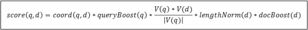
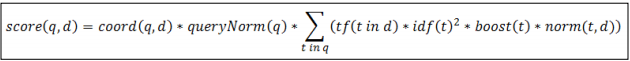

Lucene默认的打分算法
当谈论到查询的相关性，很重要的一件事就是对于给定的查询语句，如何计算文档得分。首先要弄清楚的是文档得分是什么。文档得分是一个用来描述查询语句和文档之间匹配程度的变量。在本节，我们将学习Lucene默认的打分机制：TF/IDF(term frequency/inverse document frequecy)算法，以及它是如何对相关文档进行打分排序。理解默认的打分算法对设计复杂查询语句来说至关重要，特别是在决定各个查询子句权重的时候。
匹配文档的打分因子
当一个文档出现在了搜索结果中，这就意味着该文档与用户给定的查询语句是相匹配的。Lucene会对匹配成功的文档给定一个分数。至少从Lucene这个层面，从打分公式的结果来看，分数值越高，代表文档相关性越高。 自然而然，我们可以得出：两个不同的查询语句对同一个文档的打分将会有所不同，但是比较这两个得分是没有意义的。用户需要记住的是：我们不仅要避免去比较不同查询语句对同一个文档的打分结果，还要避免比较不同查询语句对文档打分结果的最大值。这是因为文档的得分是多个因素共同影响的结果，不仅有权重(boosts)和查询语句的结构起作用，还有匹配关键词的个数，关键词所在的域，查询归一化因子中用到的匹配类型……。在极端情况下，只是因为我们用了自定义打分的查询对象或者由于倒排索引中词的动态变化，相似的查询表达式对于同一个文档都会产生截然不同的打分。
暂时还是先回来继续探讨打分机制。为了计算出一个文档的得分，我们必须考虑如下的因素：
- 文档权重(Document boost)：在索引时给某个文档设置的权重值。
- 域权重(Field boost)：在查询的时候给某个域设置的权重值。
- 调整因子(Coord)：基于文档中包含查询关键词个数计算出来的调整因子。一般而言，如果一个文档中相比其它的文档出现了更多的查询关键词，那么其值越大。
- 逆文档频率(Inerse document frequency)：基于Term的一个因子，存在的意义是告诉打分公式一个词的稀有程度。其值越低，词越稀有(这里的值是指单纯的频率，即多少个文档中出现了该词；而非指Lucene中idf的计算公式)。打分公式利用这个因子提升包含稀有词文档的权重。
- 长度归一化(Length norm):基于域的一个归一化因子。其值由给定域中Term的个数决定(在索引文档的时候已经计算出来了，并且存储到了索引中)。域越的文本越长，因子的权重越低。这表明Lucene打分公式偏向于域包含Term少的文档。
- 词频(Term frequency)：基于Term的一个因子。用来描述给定Term在一个文档中出现的次数，词频越大，文档的得分越大。
- 查询归一化因子(Query norm)：基于查询语句的归一化因子。其值为查询语句中每一个查询词权重的平方和。查询归一化因子使得比较不同查询语句的得分变得可行，当然比较不同查询语句得分并不总是那么易于实现和可行的。
TF/IDF打分公式
接下来看看打分公式的庐山真面目。如果只是为了调整查询语句之间的关联关系，用户不必去理解它的原理。但是至少要知道它是如何工作的。
Lucene概念上的打分公式
TF/IDF公式的概念版是下面这个样子的：
上面的公式展示了布尔信息检索模型和向量空间信息检索模型的组合。我们暂时不去讨论它，直接见识实际应用的公式，它是在Lucene实现并且正在使用的公式。


关于信息检索中的布尔模型和向量空间模型不在本书的知识范围。如果想了解更多的相关知识，可以从 http://en.wikipedia.org/wiki/Standard_Boolean_model 和 http://en.wikipedia.org/wiki/Vector_Space_Model 里面了解。

Lucene实际应用的打分公式
现在看看Lucene实际应用的打分公式长啥样：
可以看到，文档的分数实际上是由查询语句q和文档d作为变量的一个函数值。打分公式中有两部分不直接依赖于查询词，它们是coord和queryNorm。 公式的值是这样计算的，coord和queryNorm两大部分直接乘以查询语句中每个查询词计算值的总和。
另一方面，这个总和也是由每个查询词的词频(tf)，逆文档频率(idf)，查询词的权重，还有norm，也就是前面说的length norm相乘而得的结果。
听上去有些复杂吧？不用担心，这些东西不需要全部记住。用户只需要知道在进行文档打分的时候，哪些因素是起决定作用的就可以了。基本上，从前面的公式中可以提炼出以下的几个规则：
- 匹配到的关键词越稀有，文档的得分就越高。
- 文档的域越小(包含比较少的Term)，文档的得分就越高。
- 设置的权重(索引和搜索时设置的都可以)越大，文档得分越高。
正如我们所看到的那样，Lucene会给具有这些特征的文档打最高分：文档内容能够匹配到较多的稀有的搜索关键词，文档的域包含较少的Term，并且域中的Term多是稀有的。
如果想了解更多关于Apache Lucene TF/IDF打分公式，请关注Apache Lucene Javadocs中的TFIDFSimilarity类，访问网址： http://lucene.apache.org/core/4_5_0/core/org/apache/lucene/search/similarities/TFIDFSimilarity.html.
从ElasticSearch的角度看打分排序
最为重要的是利用Lucene构建起来的ElasticSearch允许用户修改默认的打分算法(了解更多相关的知识请参考第3章 索引底层控制 中 修改Lucene打分算法一节的内容)。但是要记住，ElasticSearch不仅仅是Lucene简单的封装，因为在ElasticSearh中，文档排序并非完全依赖于Apache Lucene的打分算法。ElasticSearch中实现了多种不同的查询类型，这些查询类型可以完全控制文档打分的计算方式(比如 custom_boost_facotr query,constant_score query,custom_score query)，ElasticSearch允许通过脚本定制文档的打分方式。用户可以利用ElasticSearch 0.90版本支持的重排序(rescore)机制，重新计算搜索到的文档。也可以通过其它的查询方式处理topN 结果集，不一而足。
如果想了解更多关于Apache Lucene 的query类型，请参考相关的 Javadocs 。比如： http://lucene.apache.org/core/4_5_0/queries/org/apache/lucene/queries/package-summary.html.